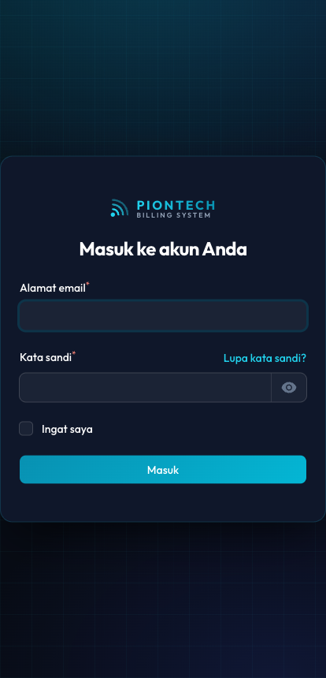
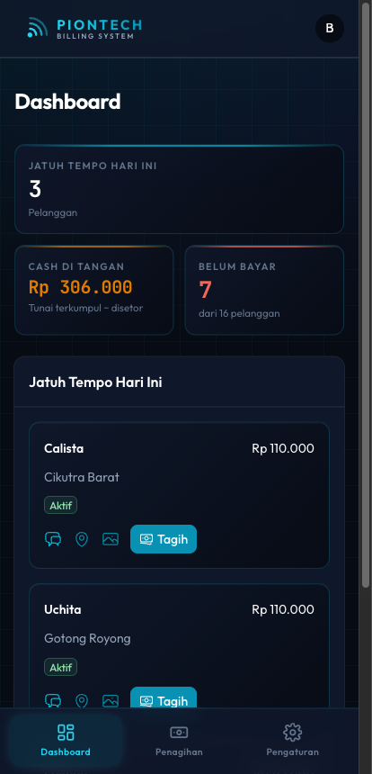
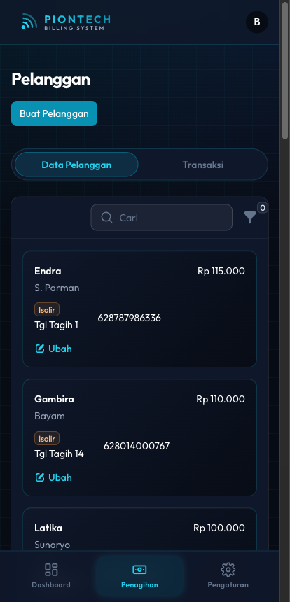
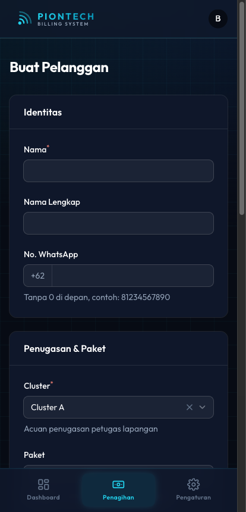
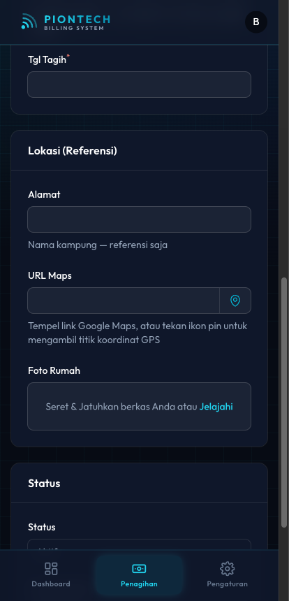
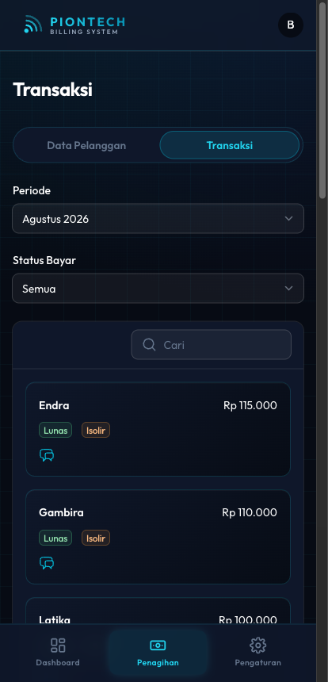
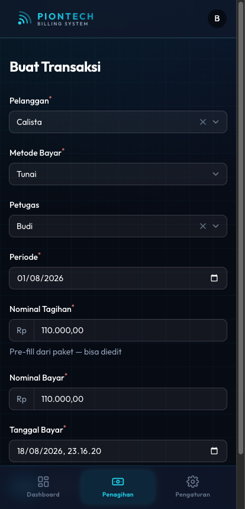
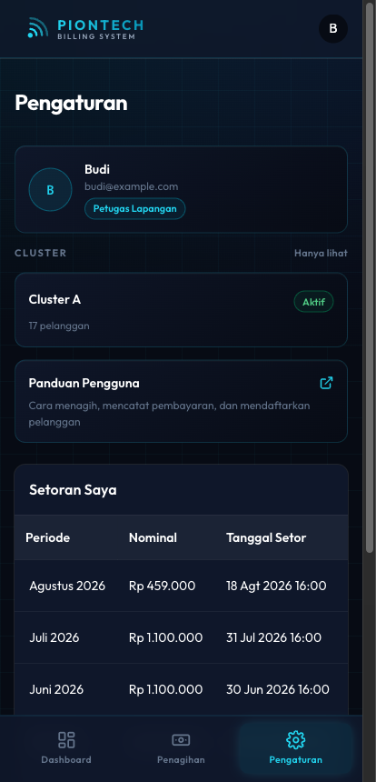

Panduan Petugas Lapangan
Tampilan petugas dirancang untuk HP. Semua yang Anda butuhkan ada di tiga menu di bagian bawah layar: Dashboard, Penagihan, dan Pengaturan.
Tugas Anda
Yang Anda kerjakan
Menagih pelanggan di cluster Anda, mencatat pembayaran tunai, mendaftarkan pelanggan baru, serta melengkapi foto rumah dan titik lokasi.
Yang bukan wewenang Anda
Mengisolir atau memulihkan pelanggan, menghapus data, mengisi kolom Referal, mengubah transaksi yang sudah tercatat, dan mencatat setoran. Semua itu tugas admin.
Masuk ke sistem
- Buka alamat sistem di browser HP.
- Masukkan email dan kata sandi Anda, lalu tekan Masuk.
- Sistem otomatis membuka tampilan petugas.

Alur kerja harian
Buka Dashboard
Lihat siapa yang jatuh tempo hari ini.
Tekan Tagih
Datangi pelanggan, terima uang, catat lewat tombol Tagih.
Cek Cash di Tangan
Pastikan jumlah uang Anda sama dengan angka di Dashboard.
Serahkan ke admin
Admin yang mencatat setoran; cek hasilnya di menu Pengaturan.
Dashboard
Halaman pertama saat masuk. Isinya tiga angka utama dan daftar tagihan hari ini.

| Angka | Artinya |
|---|---|
| Jatuh Tempo Hari Ini | Jumlah pelanggan yang tanggal tagihnya hari ini. |
| Cash di Tangan | Uang tunai yang sudah Anda tarik tetapi belum diserahkan ke admin. Angka ini harus sama dengan uang di kantong Anda. |
| Belum Bayar | Jumlah pelanggan Anda yang belum melunasi bulan ini. |
Di bawahnya ada daftar pelanggan yang harus ditagih hari ini. Tiap baris punya tombol:
- Ikon chat — buka WhatsApp pelanggan untuk mengingatkan sebelum datang.
- Ikon pin — buka lokasi rumah di Google Maps.
- Ikon foto — lihat foto rumah supaya tidak salah alamat.
- Tagih — buka form pembayaran yang sudah terisi otomatis.
Data Pelanggan
Tekan menu Penagihan di bawah, lalu pilih tab Data Pelanggan. Semua pelanggan di cluster Anda tampil sebagai kartu.

- Cari — ketik sebagian nama pelanggan, daftar langsung menyaring.
- Ikon corong — saring berdasarkan status (Aktif / Isolir) atau tampilkan hanya yang jatuh tempo hari ini.
- Ubah — memperbaiki data pelanggan, misalnya menambahkan nomor WhatsApp atau foto rumah.
Mendaftarkan pelanggan baru
Dari halaman Data Pelanggan, tekan tombol Buat Pelanggan di bagian atas.

- Nama — nama panggilan yang dikenal di lapangan. Wajib diisi.
- Nama Lengkap — sesuai KTP, boleh dikosongkan.
- No. WhatsApp — tanpa angka 0 di depan. Contoh:
81234567890. - Cluster — sudah terisi cluster Anda. Bila Anda memegang beberapa cluster, pilih yang benar.
- Paket — pilih paket; Nominal Tagihan akan terisi otomatis.
- Tgl Tagih — tanggal 1–31, dipakai sistem untuk menentukan kapan pelanggan muncul di Dashboard Anda.
- Lengkapi Alamat, foto rumah, dan titik lokasi (lihat bagian berikutnya).
- Tekan Buat.
Foto rumah & titik lokasi
Bagian Lokasi (Referensi) di form pelanggan sangat membantu penagihan berikutnya — apalagi kalau nanti pelanggan ditagih petugas lain.

Mengambil titik koordinat
- Berdiri di depan rumah pelanggan.
- Tekan ikon pin di ujung kanan kolom URL Maps.
- Bila browser meminta izin lokasi, pilih Izinkan.
- Kolom akan terisi otomatis berupa tautan Google Maps.
Bisa juga secara manual: buka Google Maps, tekan lokasi rumah, pilih Bagikan, salin tautannya, lalu tempel ke kolom URL Maps.
Memotret rumah
- Tekan area Foto Rumah.
- Pilih Kamera pada menu yang muncul, lalu potret bagian depan rumah.
- Pastikan nomor rumah atau ciri khasnya terlihat.
Transaksi per periode
Menu Penagihan → tab Transaksi menampilkan daftar tagihan pada periode tertentu, lengkap dengan status Lunas atau Belum Bayar.

- Periode — pilih bulan yang ingin dilihat, tidak terbatas bulan berjalan. Berguna untuk menagih tunggakan bulan lalu.
- Status Bayar — pilih Belum Bayar untuk melihat sisa pekerjaan Anda.
- Cari — cari nama pelanggan tertentu.
Mencatat pembayaran
Tekan Catat Pembayaran pada baris pelanggan yang belum lunas — atau tombol Tagih dari Dashboard. Form akan terbuka dengan data yang sudah terisi.

- Periksa Pelanggan dan Periode sudah benar.
- Metode Bayar terkunci Tunai — memang hanya itu yang Anda catat.
- Sesuaikan Nominal Bayar bila pelanggan membayar sebagian.
- Waktu Bayar terisi waktu sekarang; ubah bila mencatat menyusul.
- Tekan Buat.
Pengaturan & setoran
Menu Pengaturan berisi data akun Anda, cluster yang dipegang, dan riwayat setoran.

- Profil — nama, email, dan peran Anda.
- Cluster — wilayah yang Anda pegang beserta jumlah pelanggannya. Hanya bisa dilihat; perubahan cluster dilakukan CEO atau admin.
- Panduan Pengguna — membuka kembali panduan ini kapan saja dari dalam aplikasi.
- Setoran Saya — riwayat uang yang sudah Anda serahkan ke admin.
- Keluar — mengakhiri sesi. Gunakan bila HP dipakai bergantian.
Kalau ada masalah
| Keadaan | Yang perlu dilakukan |
|---|---|
| Pelanggan tidak ketemu saat dicari | Pastikan ejaan namanya benar. Kalau tetap tidak ada, kemungkinan pelanggan itu ada di cluster petugas lain. |
| Tombol Tagih tidak muncul | Pelanggan itu sudah lunas untuk periode tersebut. |
| Salah memasukkan nominal | Hubungi admin — hanya admin yang bisa memperbaiki transaksi. |
| Halaman menolak dengan tulisan "Forbidden" | Menu itu bukan untuk petugas. Kembali ke Dashboard lewat menu di bawah. |
| Cash di Tangan tidak cocok dengan uang Anda | Periksa apakah ada pembayaran yang belum Anda catat, atau setoran yang belum dicatat admin. |
| Lupa kata sandi | Gunakan Lupa kata sandi? di halaman masuk, atau minta bantuan CEO. |